This is our drone in some of its first stages, we had many dreams for our drone that didn't come to light like adding leds and a arm to grab things but dispite that we made a drone that we can hold our head high to. We laser cut cut the box a 2 times as a prototype and the final but both became diffent then one other.We ran in to the problem size of the wings being wrong and had to resize them. We fought with soildworks while doing so. Also, the hard part of putting on the wings, which took 2 people to do.We had a motor that didn't want to work at first but later got it to work fine.
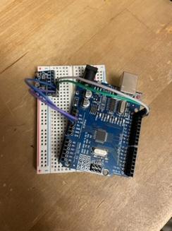
 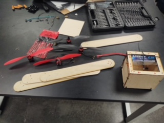
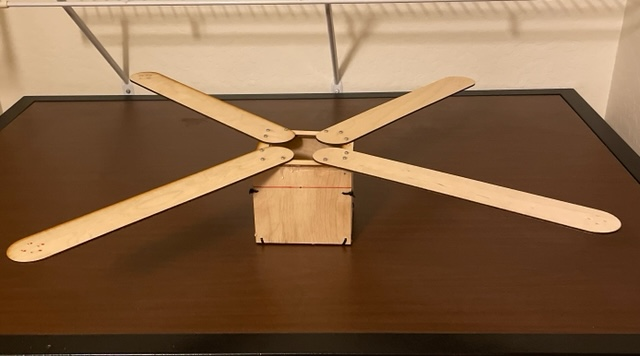
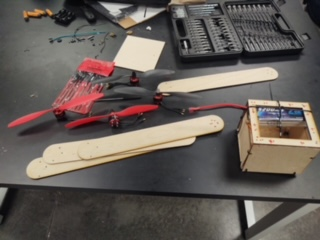
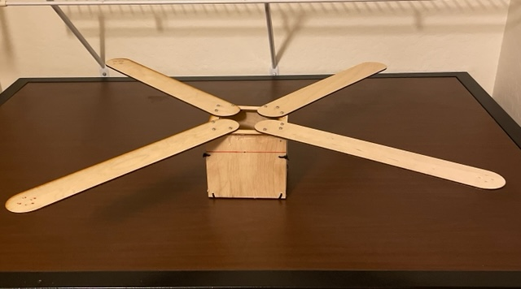


 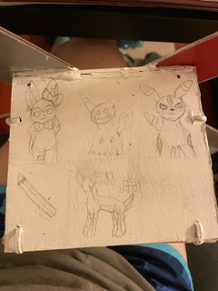
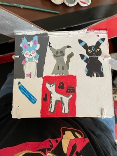
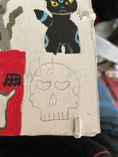
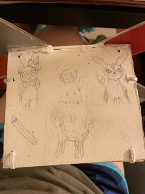
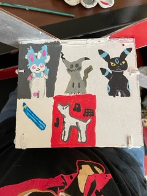
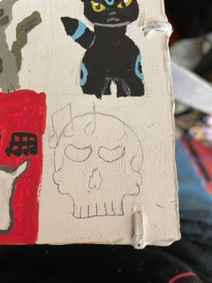